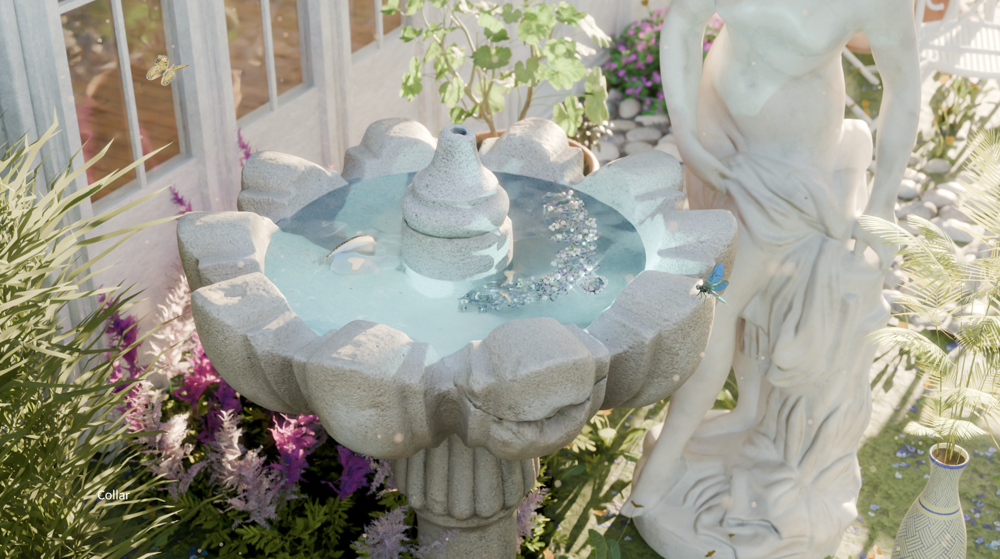
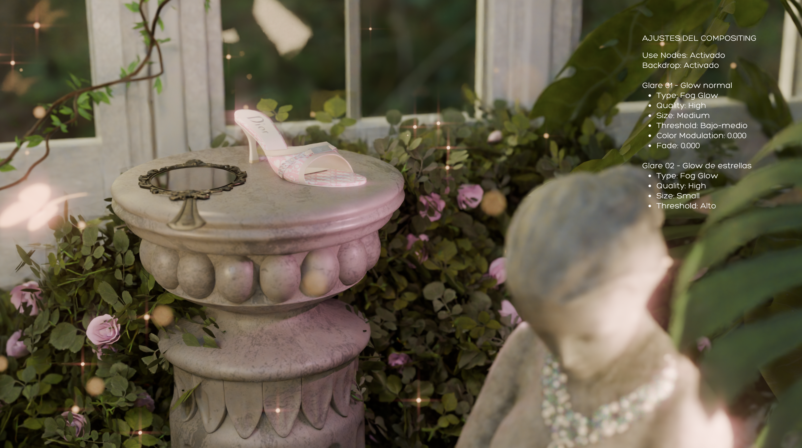
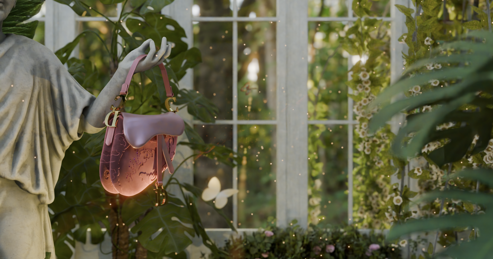
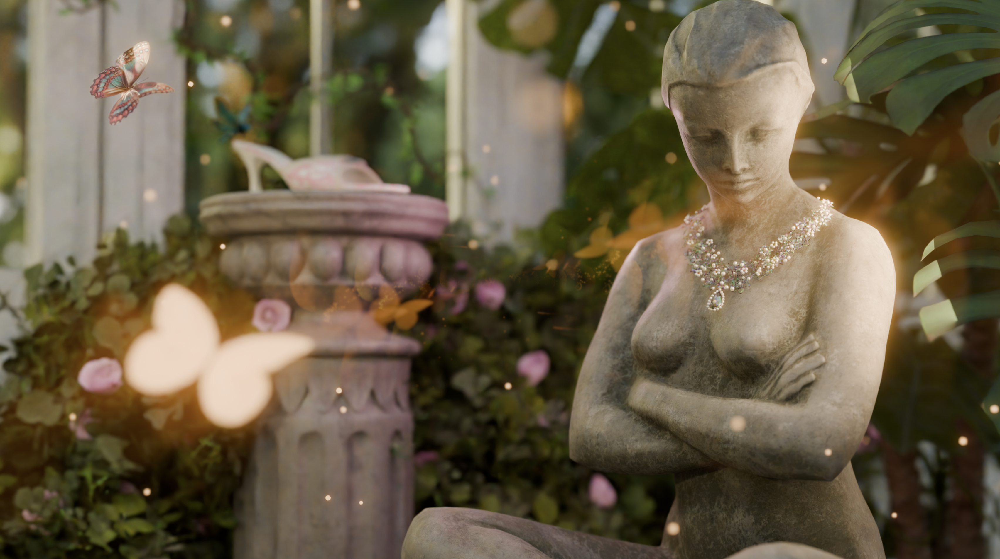
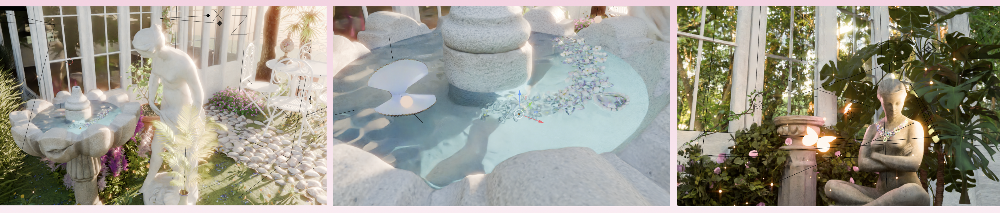
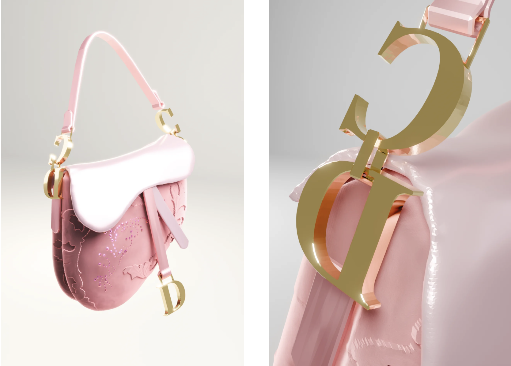
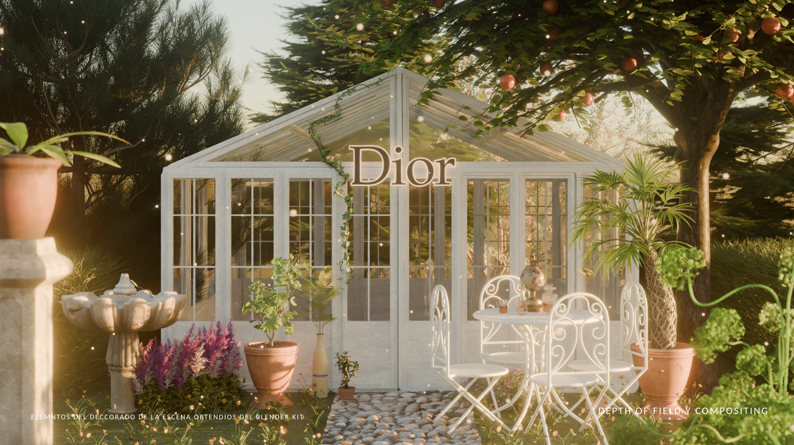
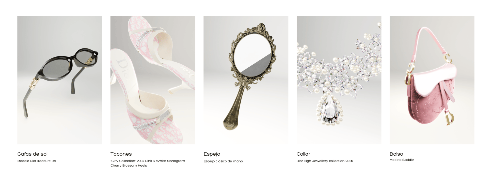
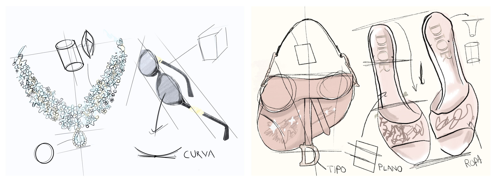
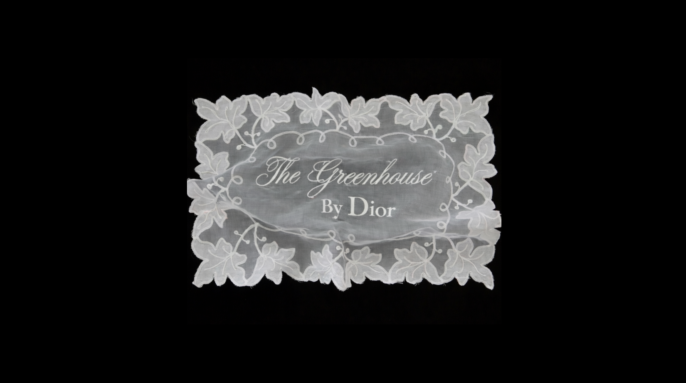

Dior campaign
2026
Creative Direction & Campaign
Art Direction / Editorial / Motion / Visual Identity
Editorial campaign and visual storytelling exploration.
Role: Creative Director & Designer.
OVERVIEW
A 3D fashion campaign inspired by the world of Dior, created entirely in Blender. Working in a team of four, we each modelled a different fashion accessory, bringing them together in a shared visual universe.
THE IDEA
We wanted to create something dreamy and almost magical, combining Dior's elegance with a whimsical garden setting. The idea was to place luxury accessories in an environment that felt alive, where nature, architecture and fashion could exist together.
BRINGING THE CONCEPT TO LIFE
My main modelling contribution was the pink Dior Saddle bag, focusing on its distinctive silhouette, materials and metallic details.
Beyond the product itself, I created the greenhouse and surrounding garden environment, bringing all four accessories into one cohesive scene. I was also responsible for the lighting, camera compositions, rendering and post-production effects.
I experimented with warm sunlight, depth of field, reflections and floating particles to create a soft, cinematic atmosphere. I wanted the final images to feel less like traditional product renders and more like stills from a fantasy fashion film.
FINAL RESULT
The result is a series of 3D fashion visuals that transform individual accessories into a shared visual story. Through lighting, composition and atmosphere, I wanted to create a world that feels both luxurious and imaginative.
This project allowed me to explore how 3D can go beyond modelling objects, becoming a tool for art direction, storytelling and creating entire visual experiences.









